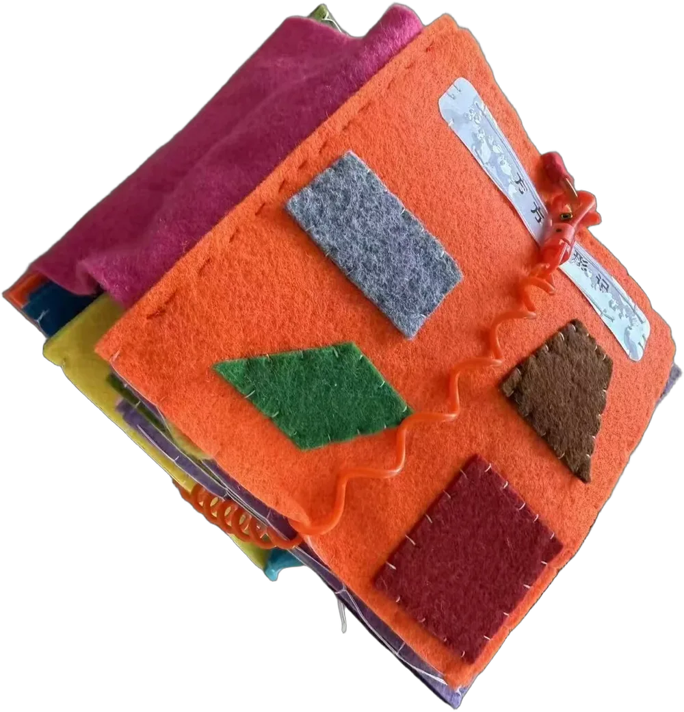
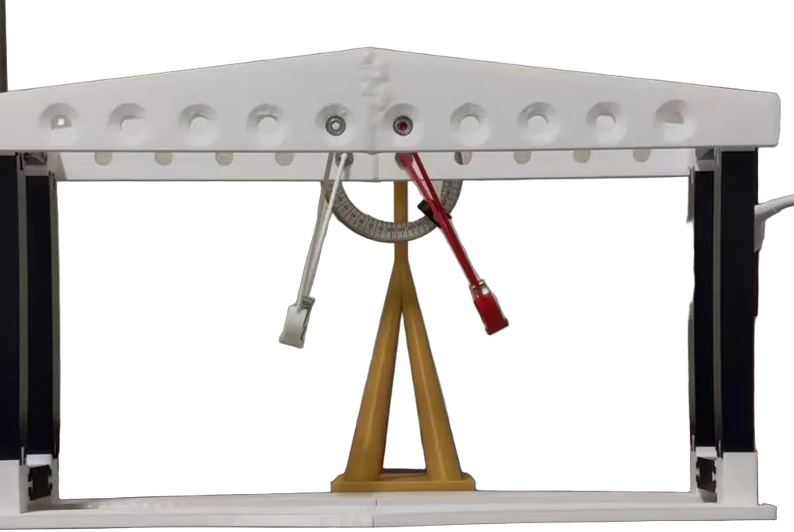
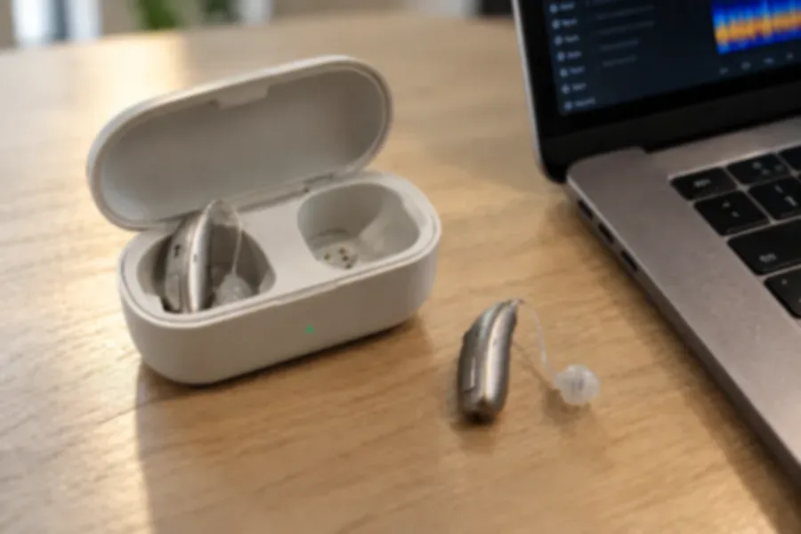
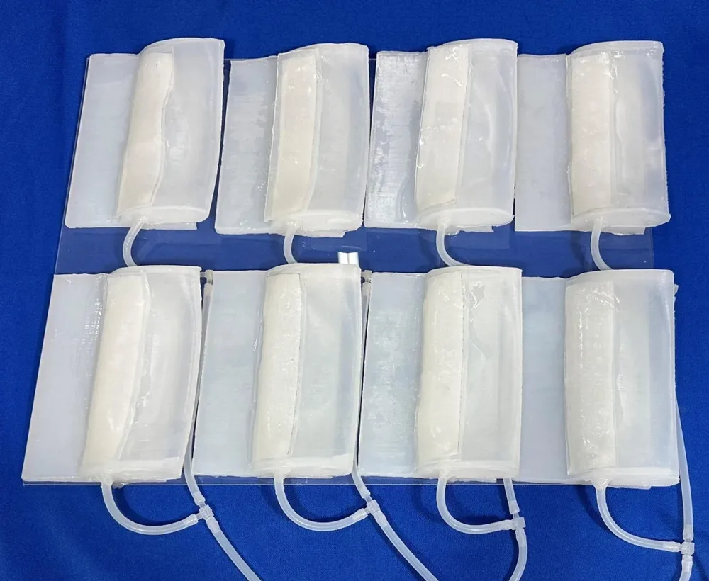

AMYHU

Every project began with a sense, and ended with something I could hand to someone else. A book read by fingertips, a house read by the eye, a recipe read by taste, and research that asks what engineering can do when a sense fails.

Physics tournaments, laboratories at Peking University and the Chinese Academy of Sciences, an AI hearing aid, and the company I founded to build it.
- Coupled pendulums · IYPT & CYPT captain
- SmartHearing · Peking University patent
- Metallic glass · CAS first author
- Lingtong Future Technology founder

Tactile books for blind children, a house small enough for a desk, a baking book on Amazon, the guzheng on stage and a black belt on the mat.
- Even Without Sight · tactile books leader
- A House in Miniature 200+ parts
- The Physics of Baking published
- Guzheng · Taekwondo black belt
Things I
have made
From felt and braille to silicone and code. Every object here was cut, sewn, cast, printed or baked by hand, and each one was made for somebody's senses.






Research &
Entrepreneurship
Out
there
Visits, tournaments, stages and workshops: the places where the work met people.


became one company.— Lingtong, 2026
Five senses,
22 pages
Every project in detail: the drawings, the making, the papers and the people they were made for.